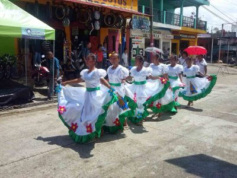

Grupos Étnicos
Los primeros habitantes del lugar fueron indígenas de la etnia Mosul, y posteriormente se asentaron personas provenientes de otros lugares como de Santo Toribio y Dolores. También fue poblado por inmigrantes procedentes de Yucatán y Chiapas, hechos que se reconocen por la existencia de apellidos de ese lugar. El primer asentamiento se formó en la sabana de Ixponé, lo que hoy se conoce como Santa Ana Vieja. Como testimonio de este hecho se puede observar en el lugar un corral de piedras y las ruinas de calicanto de lo que fuera la casa del Cura Rector. Los idiomas originarios de este departamento son el itzá y el mopán. En zonas limítrofes con México se habla también el lacandón y el maya yucateco, de los cuales persisten el Maya Itzá y el Maya Mopán. La mayoría de habitantes habla el español como idioma popular, existiendo también una buena parte de población que habla el idioma Maya Q'eqchí'. Petén es un lugar de gran convergencia de culturas debido a la migración proveniente del resto de departamentos de Guatemala, principalmente de personas en busca de mejores oportunidades de empleo. También el turismo nacional e internacional genera un gran intercambio cultural en la zona.Entre sus radiciones se encuentran: La chatona, el caballito, las mesitas, la procesión de la santa calavera, los Huastecos, los faroles, el baile del venado, la enhiladera de flores, la quema del diablo, el muerto, el día de los difuntos.
El numero de población y sus recpecivas etnias es:
Petén está situado en el norte del territorio de Guatemala en lo que se denomina las tierras bajas de los mayas. Esta civilización se desarrolló ampliamente en tal ámbito geográfico mesoamericano durante los períodos preclásico y clásico . Posteriormente, tras la llegada de los conquistadores españoles, sirvió Petén como reducto defensivo de los itzaes, que a su regreso de la península de Yucatán, tras la ruptura de la Liga de Mayapán se volvieron a establecer en la región refugiándose en Tayasal donde fueron encontrados por los europeos en 1525.2. Se estima que Petén se encontraba deshabitado al inicio del tercer milenio antes de Cristo. El período inicia aproximadamente en al año 1000 a. C. y termina rumbo al 320 d. C. se comenzaron a desarrollar ciudades en la Cuenca del Mirador, como Nakbé, El Mirador, Cival y San Bartolo. El período clásico abarcó desde los años 320 a 987 d. C.
